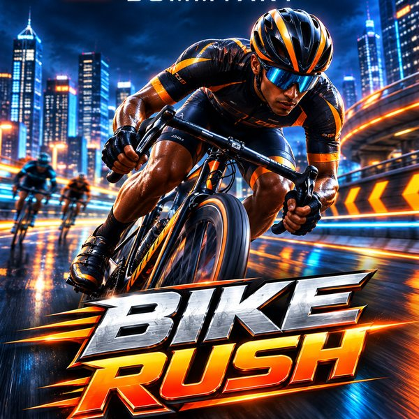

Sommyart presents
Bike Rush
Race across 38 Nigerian landmarks, from Enugu streets to Zuma Rock. Flip off mega ramps, beat the chapter bosses.
Download for AndroidVersion 2.2.0 · 0.9 MB · Android 7.0 or newerInstall once. New tracks, bikes and fixes arrive by themselves every time you open the app. No need to download again.
How to install
- Tap Download for Android. If Chrome warns about the file, choose Download anyway.
- Open the downloaded file. If asked, allow Install unknown apps for Chrome, then go back.
- Tap Install, then open Bike RUSH. The first launch needs internet; after that it also works offline.
Already have an older Bike RUSH installed? Install this over it. Your coins, bikes and progress carry over.